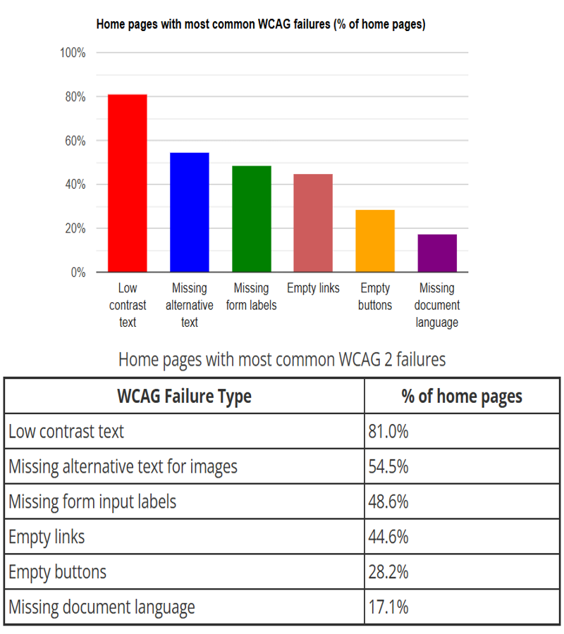

When we think of blindness, we might think of someone completely lacking sight, but
this is referred to as “total blindness”, and it only affects 15% of those with eye disorders
[1]. This
leaves 85% with some remaining sight, and for that reason, many low vision people rely on some
sort of text-to-speech software when using a computer, which gives them an audio description of the text on websites.
The problem is that not all things on a website are text-based, images, for
example. For that, we have “alt-text”, a brief text description of the image, which can be read by
a screen reader, and that gives the image’s basic context to the page.
With that said, not all webpages are accessibility-friendly. In a 2024 study of the top
million webpages, it was found that 54.5% of the pages were missing alt-text on their images,
which makes it the second most prevalent web accessibility failure [2].

So to combat this, what I propose is Two Ring, an AI audio assistant for those with low vision, which works like the snip tool, if the snip tool gave a verbal description of the image it was taking.
I designed a simple interface, for the purpose of being easy to use. It consists of two buttons: 'Capture' and 'Stop'. Clicking the 'Capture' button allows the user to click and drag to capture an image, and a text description is created from that image using a machine learning model. Next, the text description is sent to a text-to-speech software, which reads out the audio description of the image. From there, the user can capture another image, or they can click ‘Stop’ which exits the program.